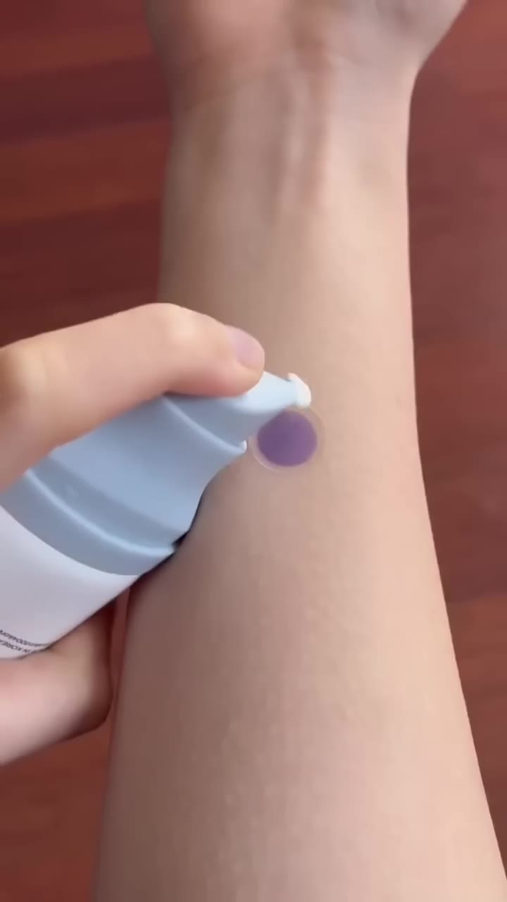
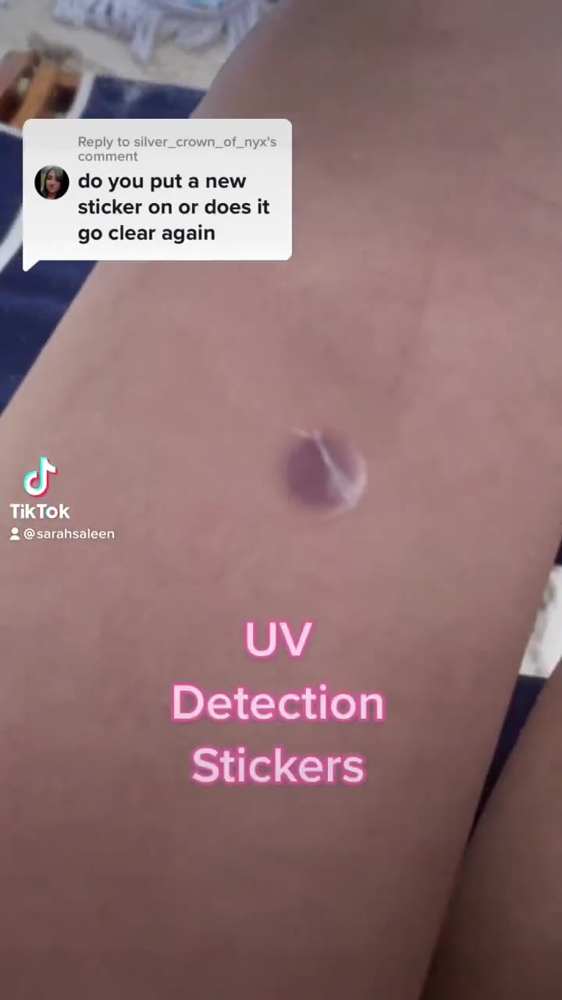
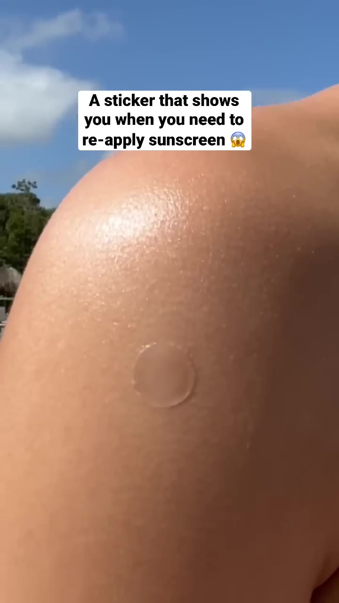
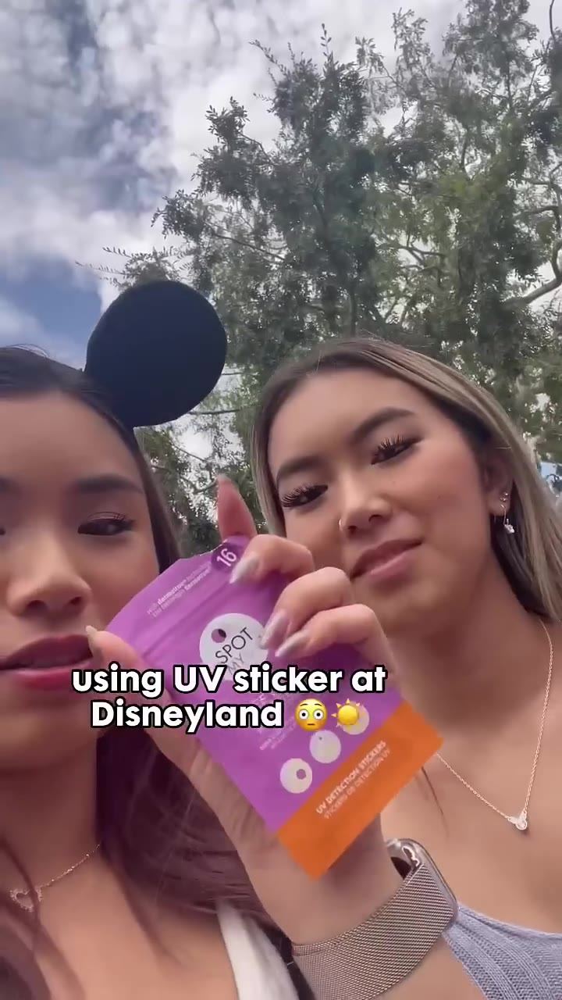
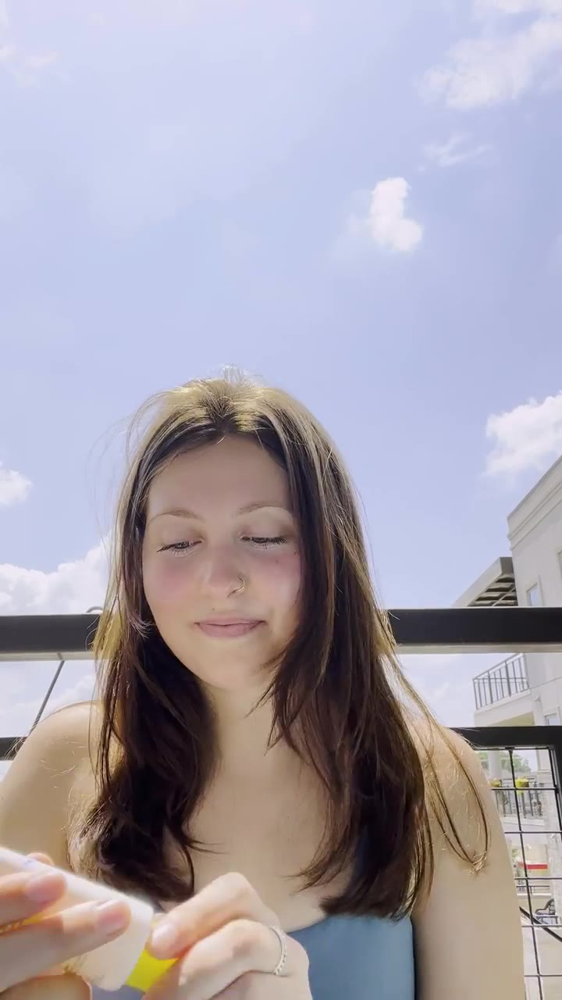
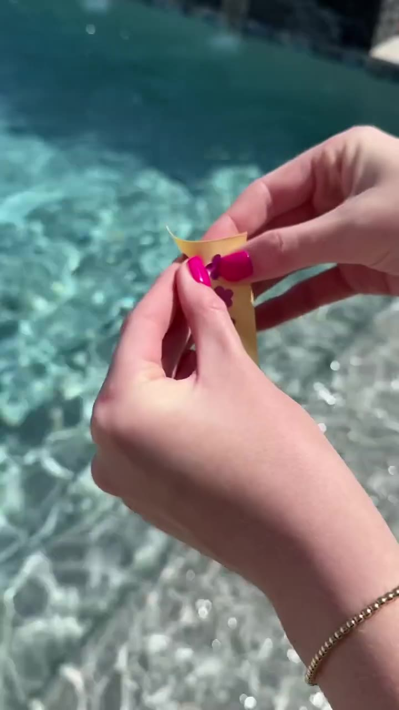
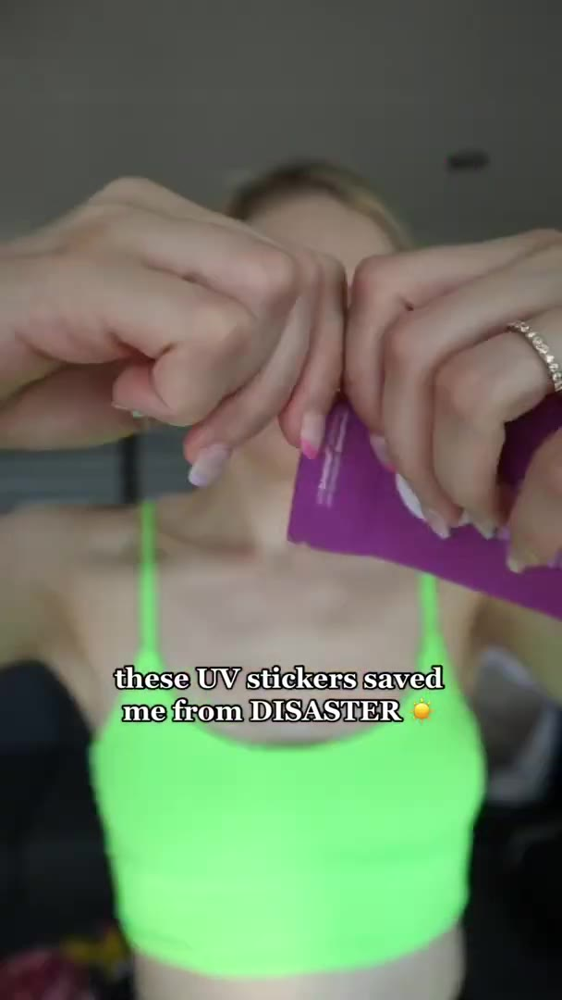

Vous avez un produit viral entre les mains, en pleine saison — et vous montrez juste la boîte.
Les gens veulent voir la TRANSFORMATION, pas l'emballage.
Les gens veulent qu'on leur parle de leur peur — coup de soleil, enfants pas protégés, peau qui vieillit.

Un petit adhésif qui devient violet quand tu es exposé au soleil — signal simple pour remettre ta crème solaire au bon moment. Résistant à l'eau, dure 12h, testé par des dermatologues, safe pour toute la famille.
Le mécanisme en 4 étapes
Cette transformation en direct est ton argument le plus puissant. Voici exactement ce qui se passe.
7 vidéos qui cartonnent sur les stickers UV
Toutes marques confondues — inspire-toi des formats qui vendent vraiment ce type de produit. Clique sur une vignette pour voir la vidéo + analyse hook / format / CTA + traduction FR.






